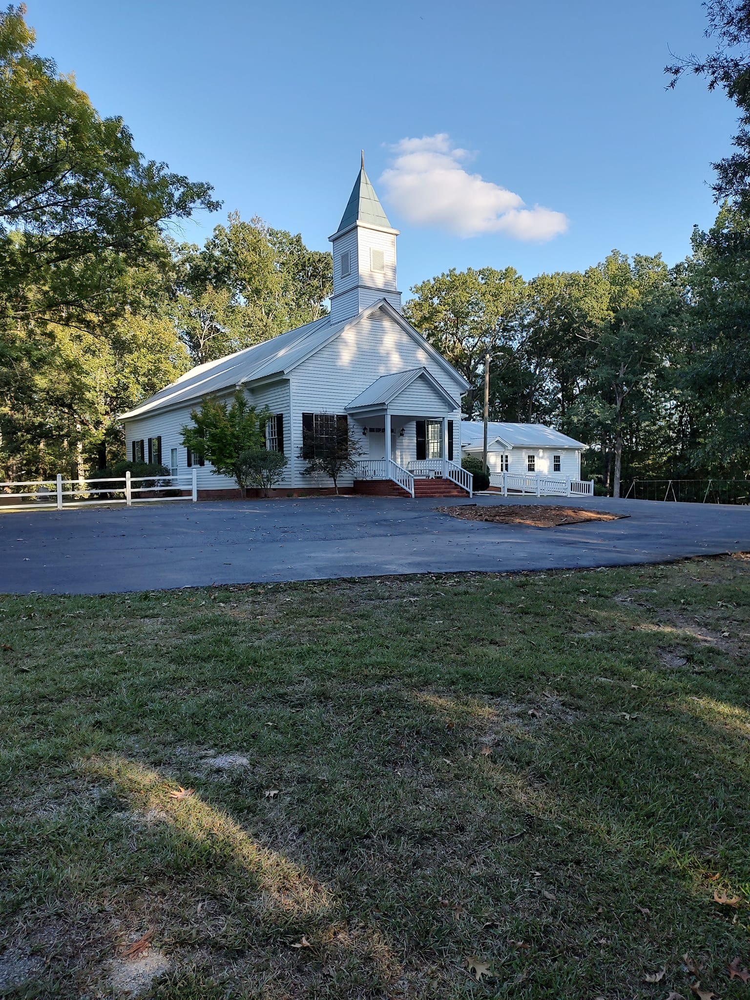

Lincolnton, Georgia · Est. 1784
Greenwood Baptist Church
A Southern Baptist congregation rooted in Lincoln County for over 250 years. All are welcome.
Plan your visitSunday School
10:00 AM
Morning Worship
11:00 AM
Sunday
Every Week
Our history
One of Georgia's oldest congregations.
Greenwood Baptist was established in 1784 — one of the oldest Baptist congregations in the state of Georgia. The church traces its roots to Upton Creek Baptist Church in Wilkes County before relocating into the pine forests of Lincoln County and taking the name Greenwood.
The congregation settled permanently in the Amity community in 1812. The sanctuary was completed in 1816 and still stands today — built entirely by hand with twelve-inch square pine beams, hand-peeled rafters, and long-leaf pine joists. Its construction closely resembles Old Kiokee, Georgia's first Baptist church. No power tools. No shortcuts.
Over the generations the church has been carefully maintained and expanded. A silver communion set was donated in 1886. The first organ arrived in 1888. In 1946 a memorial porch was added in honor of Jack W. Boyd, lost in World War II. A full restoration in 1978 added the belfry and vestibule visible today. In 2009 the congregation incorporated, marking 225 years of continuous service in Lincoln County.
Through wars, growth, and quiet years of faithful service, Greenwood Baptist has remained a steady presence in this community. We are a Southern Baptist church — a congregation that believes in the authority of Scripture, the grace of the Gospel, and the importance of showing up for one another.
Historical detail sourced from Historic Rural Churches of Georgia.
Pastor
Addison Belangia
Pastor Belangia leads the congregation at Greenwood Baptist Church. We invite you to come hear him preach any Sunday morning.
Plan your visit
We would love to have you.
Whether you are new to the area, looking for a church home, or just passing through Lincoln County — you are welcome here.
Sunday School begins at 10:00 AM and Morning Worship at 11:00 AM, every Sunday.
Address
4281 Greenwood Church Rd
Lincolnton, GA 30817
Phone
Denomination
Southern Baptist Convention